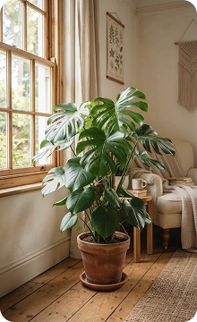
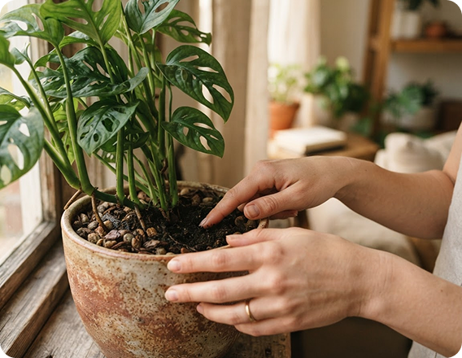

عناية أوضح. متابعة
أسهل.
نباتات أقرب.
تطبيق يساعدك على تنظيم روتين العناية بنباتاتك، ومعرفة احتياجات كل نبتة من ري وتسميد وإضاءة في الوقت المناسب وبدقة متناهية.

ليست كل نبتة بحاجة إلى الروتين نفسه
تختلف النباتات في احتياجها للضوء والماء ونوع التربة. عناية يمنحك خطة مخصصة لكل نبتة لديك بناءً على موقعها في المنزل والبيئة المحيطة لتفادي الأخطاء الشائعة وضمان نموها الصحي.
- جدول ري وتسميد ديناميكي ومخصص لكل نبتة
- تنبيهات ذكية ملائمة لفصول السنة ودرجات الحرارة
- تشخيص فوري لمشاكل الأوراق والجذور مع حلول مجربة
من أول صورة إلى روتين عناية أوضح
أربع خطوات وميزات بسيطة تمنح نباتاتك الاهتمام الذي تستحقه وتجنبك الأخطاء الشائعة
ملف لكل نبتة
سجل كامل لكل نبتة بصورها وتاريخ اقتنائها وتطور نموها وملاحظاتك الدورية مع مرور الأيام.
جدول المواعيد
تنبيهات منتظمة لمواعيد الري، التسميد، التقليم، وتغيير التربة دون أي ارتباك أو فوضى.
تنبيهات مخصصة
تعديل الجدول تلقائياً بحسب درجة الحرارة والموسم ومستوى الإضاءة الطبيعية في غرفتك.
نباتاتك في مكان واحد
لوحة تحكم تفاعلية مريحة تمكنك من متابعة حالة وصحة جميع نباتات منزلك بلمحة سريعة واحدة.
المعلومة المناسبة بجوار نبتتك
شاشة تحكم واضحة وسريعة تجمع لك تفاصيل النبتة وروتينها اليومي. ابدأ بالملاحظة ثم اتخذ قرارك دون عناء التخمين، وشاهد حالة نبتتك الحالية وتاريخ آخر ري واحتياج التسميد بلمسة واحدة.
- مؤشر رطوبة التربة واحتياج الري الفعلي
- تحديث فوري لجدول النبتة بلمسة زر

مونستيرا ديلسيوسا
نبات داخلي · الصالة الرئيسيةرحلتك مع عناية في أربع محطات
تجربة سلسة وممتعة تبدأ من لحظة إضافة نبتتك الأولى وحتى رؤية أوراقها الجديدة تنمو
أضف نبتتك
التقط صورة لنبتتك أو ابحث عن نوعها في مكتبة النباتات الشاملة بكل سهولة.
حدد موقعها
اختر مكانها في الغرفة، الشرفة، أو بجوار النافذة لضبط جدول الإضاءة المناسب.
تابع روتينك
استلم إشعارات وتنبيهات ذكية تذكرك بمواعيد الري والتسميد بدقة ودون إفراط.
شاهد نموها
دوّن الملاحظات وشاهد أوراقها الخضراء تزدهر يوماً بعد يوم بكل فخر.
تذكير يساعدك ولا يثقل على ملاحظتك
إشعارات عناية مصممة بلطف لترشدك في الأوقات المناسبة دون إزعاج، مع نصائح عملية تناسب كل مرحلة من مراحل نمو نبتتك وتغيرات الطقس والحرارة.
- تنبيهات مرنة تتكيف مع تغير الفصول ودرجات الحرارة
- فحص دوري لرطوبة التربة عبر خطوات سهلة وبسيطة
- إرشادات وقائية لتفادي تعفن الجذور وتراكم الآفات

اختر ما يناسب رحلتك مع النباتات
خيارات مرنة ومدروسة تناسب الأفراد وهواة النباتات والمجموعات المنزلية
الباقة المجانية
مثالية للبدايات ولأصحاب النباتات القليلة
- متابعة حتى 5 نباتات
- جدول ري أساسي
- تنبيهات عبر المتصفح
- دليل نباتات مبسط
الباقة الشهرية
الخيار المفضل لعشاق النباتات والمجموعات المنزلية
- عدد غير محدود من النباتات
- تشخيص ذكي لمشاكل الأوراق
- تنبيهات دقيقة بحسب الطقس
- سجل صور وتوثيق مراحل النمو
- دعم فني مباشر
الباقة السنوية
أفضل قيمة مع توفير شهرين مجاناً
- جميع مزايا الباقة الشهرية
- توفير أكثر من 30% سنوياً
- مشاركة الحساب مع أفراد العائلة
- استشارات حصرية مع خبراء العناية
- أولوية قصوى في الدعم
أسئلة تساعدك على البدء
إجابات واضحة عن كل ما تود معرفته حول استخدام تطبيق عناية
أبداً! تم تصميم تطبيق عناية ليكون بسيطاً وممتعاً للمبتدئين والمحترفين على حد سواء. يقدم لك التطبيق إرشادات واضحة خطوة بخطوة لكل نبتة لديك دون أي تعقيد.
نعتمد على خوارزميات ذكية تأخذ في الحسبان نوع النبتة، حجم الأصيص، فصول السنة، ومستوى الإضاءة ودرجة الحرارة في غرفتك لإنشاء جدول مرن يتكيف مع البيئة الفعلية.
نعم، مكتبة عناية تحتوي على مئات النباتات الداخلية والخارجية الشائعة والنادرة، كما يمكنك إضافة أي نبتة مخصصة وتحديد احتياجاتها يدوياً بسهولة تامة.
بالتأكيد! تتم مزامنة جميع بياناتك ونباتاتك وجداولك تلقائياً وبشكل فوري عبر جميع أجهزتك، سواء كنت تستخدم تطبيق الهاتف أو متصفح الويب.